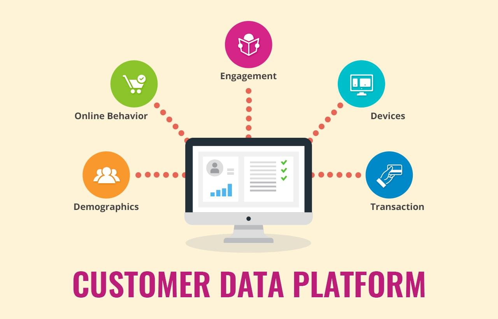

"Trong ba năm qua." Người sáng lập và Giám đốc điều hành của Treasure Data, Hiro Yoshikawa, cho biết trong một tuyên bố đi kèm với sự ra mắt của Viện, "chúng tôi đã thấy ngày càng nhiều tổ chức tiếp thị theo hướng dữ liệu áp dụng Treasure Data để thống nhất dữ liệu khách hàng của họ."
“Bây giờ chúng tôi biết phải gọi điều này là gì,” ông nói thêm.
Theo những người ủng hộ, CDP khác với cơ sở dữ liệu quan hệ khách hàng, nền tảng quản lý dữ liệu hoặc hầu hết các nền tảng tiếp thị vì nó được thiết kế đặc biệt làm vị trí trung tâm cho dữ liệu khách hàng - hồ sơ, số nhận dạng cá nhân, lượt truy cập trang web, phiên ứng dụng di động, phản hồi email, bản ghi trò chuyện , bản ghi âm về các tương tác với dịch vụ khách hàng, bình luận trên mạng xã hội, đơn đặt hàng, v.v. - và dành riêng cho các nhà tiếp thị.
Tôi đã chỉ ra với Raab rằng tất cả các nhà cung cấp tiếp thị cho rằng họ cung cấp chế độ xem tập trung này.
Ông trả lời rằng, chẳng hạn như một ví dụ, Đám mây tiếp thị của Adobe không đưa tất cả dữ liệu khách hàng của mình từ nhiều nguồn vào một cơ sở dữ liệu luôn có sẵn dưới dạng chế độ xem tích hợp. Thay vào đó, ông nói, nó tạo ra mã nhận dạng khách hàng để kéo dữ liệu từ nhiều nguồn vào chế độ xem được thu thập một cách nhanh chóng.
Điều đó không được tính là "một lần xem?"
Raab cho biết cách tiếp cận này - mà ông mô tả là phổ biến trong các nền tảng đã mua và kết hợp các thành phần quan trọng với nhau trong hệ thống của họ - có thể bỏ sót một số nguồn bên trong hoặc bên ngoài, có thể dẫn đến một số dữ liệu được gắn nhãn khác với những dữ liệu khác và có thể mất một số lịch sử, chẳng hạn như các địa chỉ cũ.
Và loại quan điểm khách hàng kết hợp và kết hợp này, ông nói thêm, cần có sự giám sát của CNTT, trong khi CDP phải được quản lý bởi một nhà tiếp thị dân sự.
Những người ủng hộ chỉ ra một số điểm chung cho các CDP:
- Họ được quản lý bởi nhà tiếp thị;
- Họ sử dụng một cơ sở dữ liệu thống nhất, liên tục, duy nhất cho tất cả các hành vi, hồ sơ khách hàng và các dữ liệu khác, từ bất kỳ nguồn nội bộ hoặc bên ngoài nào;
- Họ sử dụng một số nhận dạng nhất quán liên kết tất cả dữ liệu của khách hàng; và chúng hoàn toàn có thể truy cập được bởi các hệ thống bên ngoài và được cấu trúc để hỗ trợ đầy đủ nhu cầu của nhà tiếp thị về quản lý chiến dịch, phân tích tiếp thị và thông tin kinh doanh.

Nhà cung cấp nào cung cấp CDP?
Raab cho biết có khoảng hai chục nhà cung cấp hiện đáp ứng các thông số kỹ thuật của CDP, ngay cả khi sản phẩm của họ được mô tả khác nhau.
Blue Venn, ví dụ, được biết đến như một nền tảng tự động hóa tiếp thị và AgilOne đã tự mô tả mình là một “nền tảng tiếp thị dự đoán”, trong khi Ensighten thường được đặc trưng bởi quản lý thẻ và Phân đoạn bằng trung tâm API của nó. Treasure Data cung cấp cơ sở hạ tầng phân tích, Particle tự gọi mình là nền tảng dữ liệu di động, Ascent 360 cung cấp nền tảng chiến dịch tiếp thị và Signal là “nền tảng tiếp thị dựa trên con người”.
Một số người khác trong danh sách ít nhiều tự mô tả mình là CDP, bao gồm RedPoint Global, Datorama, Lyrics và Blue Conic.
Raab chưa có số liệu thống kê cụ thể về cách một CDP có thể tạo ra sự khác biệt rõ ràng so với các giải pháp khác hoặc cách phân khúc ngành này đang phát triển.
Tất nhiên, khi mọi nhà cung cấp cho biết họ đã thực hiện kiểu xem thống nhất này và khi không có thử nghiệm rõ ràng để xác định đâu là CDP thực, thì việc quyết định chính xác nền tảng nào thuộc danh mục mới này có thể khó khăn.
Nhưng, ít nhất, CDP đưa ra một mục tiêu cho những gì hệ thống tiếp thị nên làm: đáp ứng kỳ vọng của mọi khách hàng bằng cách hoàn toàn hiểu và sử dụng tất cả dữ liệu về từng hệ thống.